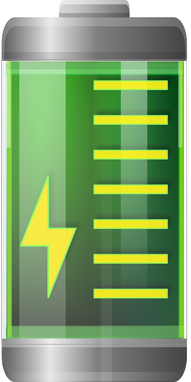
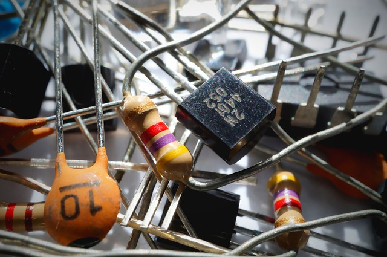

Fuentes de alimentación
 En electricidad y electrónica, las fuentes de alimentación o fuentes de potencia es el dispositivo que provee la energía electrica, es decir, su función es suministrar energía a cada elemento de los circuitos. En inglés se conoce como power supply unit (PSU), que significa: unidad de fuente de alimentación, refiriéndose a la fuente de energía eléctrica. Se reconocen principalmente de dos (2) tipos:
- Conversión de corriente alterna (AC) en corriente continua (CC) o directa (DC)
- Baterias basadas en elementos quimicos
Grados de libertad de un robot GDL
 Una de las características más importantes en un robot es el número de grados
de libertad (GDL) necesarios para que pueda realizar algun trabajo deseado.
Un grado de libertad se define como cada una de las variables necesarias
para obtener los movimientos de un cuerpo en el espacio.
El máximo de variables es de 6, cuando el número de grados de libertad es mayor
se denomina redundancia.
Una de las características más importantes en un robot es el número de grados
de libertad (GDL) necesarios para que pueda realizar algun trabajo deseado.
Un grado de libertad se define como cada una de las variables necesarias
para obtener los movimientos de un cuerpo en el espacio.
El máximo de variables es de 6, cuando el número de grados de libertad es mayor
se denomina redundancia.
Componente basicos de electronica

- Resistencias: limitan el paso de corriente.
- Transistores: amplifican o controlan el paso de la corriente.
- Circuitos integrados: realizan operaciones de control específicas o programadas.
- Capacitores: realizan almacenamiento temporal de energía.